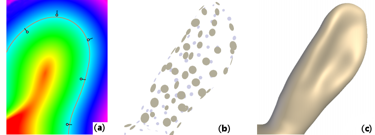
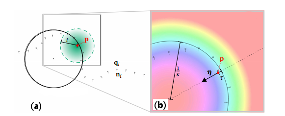

- Generated on for Ponca by
 1.15.0
1.15.0
|
Ponca
eb7239a9c07e156fb1edc6faac7fe89e2b256bda
Point Cloud Analysis library
|
The fitting module is dedicated to the smooth fitting of point clouds and extraction of useful geometric properties. Figure 1(a) shows a typical example in 2D: we reconstruct a potential function (shown in fake colors) from a few 2D points equipped with normals; then the 0-isoline of this potential gives us an implicit curve (in orange) from which we can readily extract further properties like curvature. A great benefit of this implicit technique [9] is that it works in arbitrary dimensions: Figures 1(b-c) show how we reconstruct an implicit 3D surface with the same approach, starting from a 3D point cloud. Working with meshes then simply consists of only considering their vertices.

This is just the tip of the iceberg though, as we also provide methods for dealing with points equipped with non-oriented normals [6], techniques to analyze points clouds in scale-space to discover salient structures [14], methods to compute multi-scale principal curvatures [15] and methods to compute surface variation using a plane instead of a sphere for the fitting [16].
In the following, we focus on a basic use of the module, and detail how to:
As a prerequisite, please read Defining Points in Ponca in order to define the points on which the computation will be performed. For an exhaustive list of available methods, pleas read: Fitting Module: Reference Manual.
The Fitting module defines operators that rely on no data structure and work both with CUDA and C++. These core operators implement atomic scientific contributions that are agnostic of the host application. If you want to use the Fitting module, just include its header:
The Fitting Object is what Two template classes must be specialized to configure computations.
At this point, most of the hard job has already been performed. All we have to do now is to provide an instance of the weight function, where \(t\) refers to the neighborhood size, and initiate the fit at an arbitrary position \(\mathbf{p}\). In this example we traverse a simple array, and samples outside of the neighborhood are automatically ignored by the weighting function. Once all neighbors have been incorporated, the fit is performed and results stored in the specialized Basket object.
After calling finalize or compute, it is recommended to test the return state of the Fit object before using it:

Now that you have performed fitting, you may use its outputs in a number of ways (see Figure 2(b) for an illustration in 2D).
You may directly access generic properties of the fitted Primitive:
This generates the following output:
You may rather access properties of the fitted sphere (the 0-isosurface of the fitted scalar field), as defined in AlgebraicSphere :
You will obtain:
Some ComputeObject provide projection operators, which allows to define Moving Least Squares (MLS) surfaces (see [13] and [7]). MLS surfaces are not defined explicitly, but rather implicitly by projection operators. Under the hood, projecting on a MLS surface require to iterate between successive local fits (handled by the ComputeObject) and projection step (handled by a projection operator, as detailed below). Ponca provide MLSEvaluationScheme to perform this evaluation. To evaluate a MLS surface, you only need a ComputeObject and a set of points:
The method MLSEvaluationScheme::compute can be customized by changing the projection operator (DirectProjectionOperator and GradientDescentProjectionOperator are currently available). The class also provide control over the iteration stopping criteria (convergence and maximum number of iteration).
For convenience, Ponca also provide SingleEvaluationScheme, which has the same API than MLSEvaluationScheme, but simply does a single fit without projection. It is literally defined as
Ponca provides BasketDiff, a class to extend an existing Basket with differentiation tools. Given a specialized type TestPlane that performs covariance plane fitting (using Ponca::CovariancePlaneFit), and defined as follows:
BasketDiff allows to extend this type to compute its derivatives in space and/or scale:
Internally, Ponca::Basket process the neighbors sequentially, and the compute function is overall equivalent to
More complex computational scheme are included within Ponca (e.g BasketComputeObject::computeMLS for Moving Least Square). Still this simplicity can be used to change how this function behave and tailor it to your needs.
This also allows to use custom data structures in order to speedup computation. You may, for example exclude points you know won't be within the prescribed radius. For this reason, Ponca provide spatial structures that can be used to accelerate spatial queries. Consider for instance using the KdTree class with range queries:
Neighbor filters are critical components of the library. Their main goal is to provide computation information on how much a point is considered to be a neighbor. This information is given through weights defined by the Filter and the Kernel. In additions, some filters may transform the neighbors, for instance to express relatively to the evaluation point. Perhaps the most common filter is DistWeightFilter, which filters out points that are too far and weight the other according to their distance from the evaluation position, and also translate neighbors in the local frame. Another alternative are the classes NoWeightFilter and NoWeightFilterGlobal, which do not filter any neighbor and offer control over the transformation of the neighbors.
DistWeightFilter is defined from the euclidean distance field centered at the evaluation position (see DistWeightFilter::init()). Given a distance to this evaluation position, the weight is computed (see DistWeightFilter::w()) by applying a 1d weighting function defined as follows:
DistWeightFilter also provides computation of the first and second order derivatives of the weight, both in scale (DistWeightFilter::scaledw(), DistWeightFilter::scaled2w()) and space (DistWeightFilter::spacedw(), DistWeightFilter::spaced2w()), and their cross derivatives (DistWeightFilter::scaleSpaced2w()). Theses methods check if the weight kernels provides the appropriate derivatives.
It is also possible to define new filter that could take into account any other desired parameter. The general API is:
The filter should extend either CenteredNeighborhoodFrame or GlobalNeighborhoodFrame. They help to express points in local coordinates, often relative to the evaluation location. CenteredNeighborhoodFrame helps with translation invariant filters. Its conversion function is simply \(x - p\), where \(X\) is the query point and \(p\) the evaluation location.
GlobalNeighborhoodFrame does not affect coordinates and points remains in the global domain.
The goal of the Fitting module is to provide lightweight, fast and generic algorithms for 3d point cloud processing. We mostly focus on local regression techniques, which are core components of surface reconstruction techniques [3] [9], geometric descriptors [14] [12] or shape analysis techniques [11]. Most of these techniques share similar computation, and can be combined in several ways. For instance, NormalDerivativeWeingartenEstimator estimates curvature values by analyzing the spatial derivatives of a normal field, and can be combined with any normal estimation technique providing spatial derivatives.
In order to ease the association of multiple computational components, the library is based on the Curiously Recurring Template Pattern (CRTP). In contrast with polymorphism, this method allows to combine multiple short computations without adding runtime overhead (both in terms of memory footprint and execution time). Instead, the combination of the computational components is performed and optimized when compiling the program, and thus require more memory and time for this stage.
Because of some properties of the C++ language, our classes does not inherit from a Base interface defining the API, but rather follows concepts, as described in fitting_concepts.
The Basket class is the central part of the fitting module as it is the interface for all computation and provide the some utilities. The signature of the class is as follow:
The first two parameters are the Point type and the Filter used throughout the computation. The last two parameters defines the list of computation for each point cloud. Through multiple type indirection and type list unrolling, Basket will inherit all those Extension type in reverse order.
Unrolling example Ponca basic CPU, the basket is defined as:
This line, defines the class hierarchy:
Because Basket inherit every types given as argument, it is easy to access any result or any set any parameter. It suffices to call the function on the Basket object as-if it was an object of the computation you want to alter.
The link between all these class is made through the defined Base type, which points to its parent class in the hierarchy. It becomes possible to access all result, all functions defined in the hierarchy through this prefix, provided there is no overriden name. Hence, in this example, refering to Base::m_uc within GLSParam will reference the current value of AlgebraicSphere::m_uc. However, refering to Base::addLocalNeighbor in GLSParam will reference the function OrientedSphereFitImpl::addLocalNeighbor as this is overriden by the class.
In order to target more directly a Fitting method, Ponca provides cast operation. For example, the MeanNormal class provide the MeanNormal::meanNormal function that returns a pointer to the implicit instance.
In order to make an estimator compatible with Ponca Fitting API, new estimator should have the following structure:
In order for each computation to work properly, the functions init, addLocalNeighbor and finalize should call their Base version (Base::init, Base::addLocalNeighbor, Base::finalize). Presumably, this is among the first thing each of these function does.
Aggregating small computational objects allows to minimize code duplication, but also to easily combine different techniques. For instance, GLSDer can be used independently of the fitting technique, e.g. Ponca::OrientedSphereFit or Ponca::UnorientedSphereFit, as long as the fitted Primitive is an AlgebraicSphere.
In order to detect if the computational objects are correctly combined, Ponca relies on C++20 concepts. Most concepts provided for Basket extensions and tools can be found within the Fitting/concepts.hpp file. For instance, the GLSParam class is defined as:
We encourage macros to express requirements, as they ease definitions. For instance:
This indicates that the class expects another extention to provide an AlgebraicSphere. If not, a compiler error will be emitted. For instance, gcc emits:
The whole output can be quite verbose, but is very precise: it tells you exactly what expression of a requirement is invalid and can help you debug the code. Classes do not describe which concept they satisfies, apart perhaps in their documentation.
As explained earlier, the class hierarchy can not reach every function of every through the provided Base type due to overloading. The mecanism Ponca implements is a cast operator. Fortunately, this is quite common and a macro helps to define them. Add the following within a public section of your class:
Where the first parameter is the class name and the second is the name of the cast function which is, most of the time, the same as the class name excpet a first lower case letter. Note that this macro requires the template parameter to be named following ponca conventions. A class may provide multiple cast operator.
In order to respects concepts, a cast operator to a common name is required. This name can be found within the concept declaration (Fitting/concepts.hpp)
The API for defining new estimator that differentiate the primitive follows the same principle from classical estimator. The base class is BasketDiff which follows the same CRTP / inheritance principle except that a Basket is required as a first parameter.
A few addition should be notted however. First, the class is now templated on a flag (an integer) representing the variables according to which we want to differentiate. For now, Ponca defines only two set of variables (<Fitting/enums.h>):
The macro PONCA_FITTING_DECLARE_DEFAULT_DER_TYPES defines two additionnal types ScalarArray and VectorArray. Those types defines storage for derivative result. Note that they are fixed-size array whose size is adapted to the total number of derivatives. Their layout is described below depending on the type of differentiation.
| Fitting derivative value | Number of derivatives | Scalar Array indices |
|---|---|---|
| FitScaleDer | 1 | [0] is the derivative w.r.t scale |
| FitSpaceDer | DataPoint::Dim | [0:DataPoint::Dim] derivatives w.r.t eval position |
| FitScaleSpaceDer | 1 + DataPoint::Dim | [0] derivatives w.r.t scale, [1:DataPoint::Dim+1) derivatives w.r.t eval position |
In many cases, one may want to compare multiple Baskets or extensions. The classical solution is to write a function that accepts a template type (which would be your Basket) and then call the function manually for each type. For this reason, Ponca provides a Factory that abstracts away the iteration over compute objects for the most common types.
The Factory module also provides the ability to filter by concept. Most Ponca fitting concepts have a corresponding filter. For a concept named "ProvidesXXX", Ponca creates two filters: "XXXProvider" and "NotXXXProvider", which can be used for filtering.
Classical literature methods can also be obtained through the Factory. For a complete list, see the Ponca::Method enumeration.
In most cases, only one primitive is included in the Basket, and it is recommended to use the helper classes provided by Ponca for fitting, e.g. CovariancePlaneFitImpl, OrientedSphereFitImpl. However, Ponca also allows to combine multiple primitives, for instance to share intermediate computation results. Using this functionality requires to really understand how the different primitives and fitting techniques are working. In any case, it is recommended to explicitly define the computational arrangement, e.g.:
After fitting, this object provides access to both the plane and the sphere, through the respective cast operators #AlgebraicSphere::algebraicSphere() and #Plane::plane().
Ponca can be used directly on GPU, thanks to several mechanisms:
Check the C++/Cuda, the Python/Cuda (using PyCuda), example_sycl_basic and example_sycl_kdtree examples for more details and how-to.